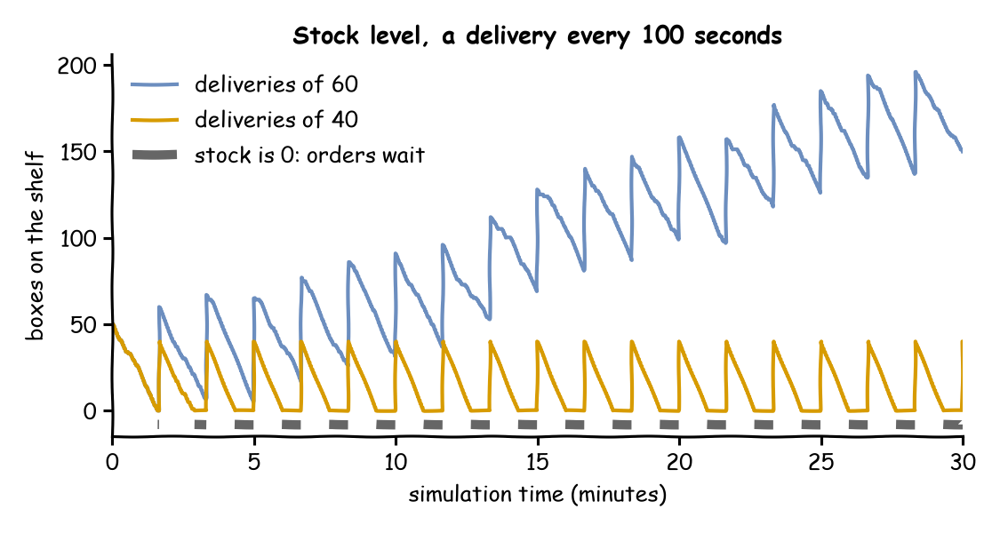

Every order needs a box, and boxes come from a shelf that a delivery fills every 100 seconds. In that time about 50 orders arrive on average, and each takes one box. This page asks: what happens when stock runs out?
Decision: the size of each delivery: 60 boxes or 40.
Measures: the mean wait for packing and how often the shelf is empty.
Runs: two runs of the hour, one for each delivery size, each with the seed 42 and starting with 50 boxes on the shelf.
Assumptions: orders arrive at random, every delivery comes on time, and every order takes the same time to pack.
What You Will Learn
This page shows how to:
hold boxes in a container that packing takes from and deliveries fill;
watch the stock's level over a run;
see what happens when deliveries cannot keep up with orders.
What You Add
This page adds a stock container, from which packing takes one box per order, and a deliveries arrival, whose task adds boxes to the shelf. The shop is the one from First Simulation: one packer, an order every 2 seconds on average, and 1.5 seconds of packing.
Hold Stock
So far each order needed only a packer, a resource that it holds and gives back. Stock is different: it is a quantity, which some tasks take away and others add, and which is not given back. In SimPy it is a Container: a level between 0 and a capacity, with get(amount) to take and put(amount) to add. A get waits while the level is too low, and a put waits while there is no room. A desflow container behaves like a SimPy Container in all three APIs. The tests compare its waiting gets and puts with a plain SimPy Container (SimPy Compatibility).
In desflow it is a container in the containers section. Its current_cap is the capacity, the most it can hold, and level is what it holds when the run starts:
# Boxes on the shelf: room for 200, and 50 when the run startscontainers={"stock":ContainerConfig(current_cap=200,max_cap=200,level=50)},
A ContainerConfig holds the level a container starts at. The DynamicContainer built in run reads it, as the full file below shows.
The run builds the container, as it builds the packers. Look at what can wait on it:
Take and Restock
Packing an order takes one box. The task gets its packer first and then its box, so an order that finds the shelf empty waits for stock while it holds the packer:
pack_order:service:packingresource:packers# One box per order, taken once the order has a packer; waits while stock is 0get:{container:stock, amount:1}payload:{event_type:order_packed}
# One box per order, taken once the order has a packer; waits while stock is 0@app.task(service_id="packing",resource_id="packers",get={"container":"stock","amount":1},)defpack_order(task_id:int):return{"event_type":"order_packed"}
withshop["packers"].request()asrequest:yieldrequest# One box per order, taken once the order has a packer; waits while stock is 0yieldshop["stock"].get(1)
The stock is a SimPy container: get(1) is an event that happens when the level covers the amount, and the process waits at the yield until then. SimPy and desflow describes containers and stores.
Save the files from Full Files in one folder and run the commands there. A delivery arrives every 100 seconds, and its task puts the boxes on the shelf. The task waits while there is no room for all of them. It has no service and no resource, so it takes no time and publishes its payload once the boxes are on the shelf:
restock:# Adds the delivery to the shelf; waits while there is no room for it allput:container:stockamount:${DELIVERY:-60}payload:{event_type:stock_delivered}
${DELIVERY:-60} reads the environment variable DELIVERY, 60 when it is not set, so DELIVERY=40 desflow run stock.yaml runs the smaller deliveries.
# A delivery every 100 secondsapp.add_arrival("deliveries",dist="constant",value=100)# Adds the delivery to the shelf; waits while there is no room for it all@app.task(put={"container":"stock","amount":delivery})defrestock(task_id:int):return{"event_type":"stock_delivered"}@app.arrival_loop("deliveries")defdelivery_generator(context:SimulationContext):task_id=0whileTrue:delivery=yieldcontext.wait_for_arrival("deliveries")context.spawn(restock(task_id,entity=delivery))task_id+=1
defrestock(env,shop,delivery,key,task_id):"""Adds the delivery to the shelf; waits while there is no room for it all."""yieldshop["stock"].put(delivery)value={"event_type":"stock_delivered"}env.publish_event(key,value,task="restock",instance=task_id)defdelivery_generator(env,sampler,shop,delivery):arrival=env.registry.get_config("Shop.arrival.deliveries")task_id=0whileTrue:yieldenv.timeout(sampler.sample(arrival))key=f"deliveries-{task_id+1}"env.process(restock(env,shop,delivery,key,task_id))task_id+=1
Watch the Level
At the minimal level and above, the built-in statistics publish each container's capacity, level, getters_waiting and putters_waiting. typical adds the mean wait. Statistics describes the statistics:
# The stock's level and waiting tasks every 10 seconds, and the mean waitenv.setup_stats("Shop","typical",interval=10)
With deliveries of 40, the shelf runs out before the second delivery. Each reading publishes every statistic of the level. The block keeps three of them, around the stock-out: the packer queue, the level and the orders waiting for a box:
At 180 seconds the shelf is empty, one order waits for a box, and three more wait behind it for the packer. The delivery at 200 seconds puts 40 boxes on the shelf. The waiting order takes its box at that same moment, just after the reading.
The level is also a registry path, Shop.containers.stock.level, so a scenario step or a message from outside can set it during a run, as a stock count would. Stores and Containers describes what such an update does.
What You Get and Why
What happens when stock runs out? Orders wait for boxes, and when deliveries cannot keep up, the wait grows all hour. The level over the first 30 minutes, for both delivery sizes:

These figures come from one run of the hour for each delivery size, with the seed 42. With deliveries of 60, the mean wait for packing is 1.93 seconds, and stock runs out only once, just before the first delivery. With deliveries of 40, the mean wait is 341.89 seconds, and the shelf is empty for about 40 of every 100 seconds. Deliveries of 40 boxes every 100 seconds allow at most 40 orders to be packed in 100 seconds, while 50 arrive on average. So the packer queue grows all hour, as with too few packers on Queues and Capacity.
Each tab prints the mean wait for deliveries of 60, then of 40:
deliveries of 60: mean wait 1.93 s
deliveries of 40: mean wait 341.89 s
Stock adds a second queue: orders wait at the shelf as well as at the packer. Packing takes its packer before its box. So the shelf's queue is never longer than the number of packers, and the other orders wait in the packer queue behind it. An empty shelf therefore also stops the packer. A task whose resource is scarce can take the box first instead: the long queue then forms at the shelf, and the packer stays free. Either way, supply below demand means a queue that grows for as long as the run lasts, as Queueing Basics explains for a packer. Stores and Containers describes both kinds of holding.
Key Takeaways
Stock adds a second queue, at the shelf, beside the queue at the packer.
Packing takes its packer before its box, so an empty shelf also stops the packer.
Supply below demand gives a queue that grows for as long as the run lasts, as too few packers do.
# The Stock tutorial: packing takes a box from stock, and deliveries restock it.# Run it with: desflow run stock.yaml# With smaller deliveries: DELIVERY=40 desflow run stock.yamlsimulation:sim_id:Shopfactor:0random_seed:42resources:packers:{current_cap:1, max_cap:4}services:packing:{dist:constant, value:1.5 s}containers:# Boxes on the shelf: room for 200, and 50 when the run startsstock:{current_cap:200, max_cap:200, level:50}arrivals:# One order every 2 seconds on average: 50 boxes every 100 secondsorders:{dist:exponential, rate:0.5, spawn:pack_order}# A delivery every 100 secondsdeliveries:{dist:constant, value:100 s, spawn:restock}tasks:pack_order:service:packingresource:packers# One box per order, taken once the order has a packer; waits while stock is 0get:{container:stock, amount:1}payload:{event_type:order_packed}restock:# Adds the delivery to the shelf; waits while there is no room for it allput:container:stockamount:${DELIVERY:-60}payload:{event_type:stock_delivered}# The stock's level and waiting tasks every 10 seconds, and the mean wait at the endstats:typicalegress:-type:Consolerun:until:1 h
"""The Stock tutorial: packing takes a box from stock, and deliveries restock it.One packer, an order every 2 seconds on average, and a delivery of boxes every 100seconds. Every record is printed to the terminal, and the script prints the mean waitfor 60-box and 40-box deliveries at the end. To see only those lines, run:python stock.py 2>/dev/null"""importloggingfromdesflowimportConsoleEgress,SimulationContextlogging.basicConfig(level=logging.INFO,format="%(levelname)s [%(asctime)s] %(message)s")defshop(delivery:float=60)->SimulationContext:"""The shop with deliveries of `delivery` boxes every 100 seconds."""app=(SimulationContext(sim_id="Shop",factor=0,random_seed=42).add_resource("packers",current_cap=1,max_cap=4).add_service("packing",dist="constant",value=1.5)# One order every 2 seconds on average: 50 boxes every 100 seconds.add_arrival("orders",dist="exponential",rate=0.5)# The stock's level and waiting tasks every 10 seconds, and the mean wait.with_stats("typical").add_egress(ConsoleEgress()))# Boxes on the shelf: room for 200, and 50 when the run startsapp.add_container("stock",current_cap=200,max_cap=200,level=50)# One box per order, taken once the order has a packer; waits while stock is 0@app.task(service_id="packing",resource_id="packers",get={"container":"stock","amount":1},)defpack_order(task_id:int):return{"event_type":"order_packed"}@app.arrival_loop("orders")deforder_generator(context:SimulationContext):task_id=0whileTrue:order=yieldcontext.wait_for_arrival("orders")context.spawn(pack_order(task_id,entity=order))task_id+=1# A delivery every 100 secondsapp.add_arrival("deliveries",dist="constant",value=100)# Adds the delivery to the shelf; waits while there is no room for it all@app.task(put={"container":"stock","amount":delivery})defrestock(task_id:int):return{"event_type":"stock_delivered"}@app.arrival_loop("deliveries")defdelivery_generator(context:SimulationContext):task_id=0whileTrue:delivery=yieldcontext.wait_for_arrival("deliveries")context.spawn(restock(task_id,entity=delivery))task_id+=1returnappdefmean_wait(delivery:float)->float:"""Runs one hour and returns the mean wait for packing."""app=shop(delivery)app.run(until="1 h")returnapp.env.stats.readings()["Shop.stats.tasks.pack_order.wait_mean"]if__name__=="__main__":fordeliveryin(60,40):print(f"deliveries of {delivery}: mean wait {mean_wait(delivery):6.2f} s")
"""The Stock tutorial: packing takes a box from stock, and deliveries restock it.One packer, an order every 2 seconds on average, and a delivery of boxes every 100seconds. Every record is printed to the terminal, and the script prints the mean waitfor 60-box and 40-box deliveries at the end. To see only those lines, run:python stock_low_level.py 2>/dev/null"""importloggingfromdesflowimport(CapacityConfig,ConsoleEgress,ContainerConfig,DistributionConfig,DynamicContainer,DynamicRealtimeEnvironment,DynamicResource,Sampler,SimParameter,)logging.basicConfig(level=logging.INFO,format="%(levelname)s [%(asctime)s] %(message)s")PARAMS=SimParameter(sim_id="Shop",arrival={# One order every 2 seconds on average: 50 boxes every 100 seconds"orders":DistributionConfig(dist="exponential",rate=0.5),# A delivery every 100 seconds"deliveries":DistributionConfig(dist="constant",value=100),},service={"packing":DistributionConfig(dist="constant",value=1.5)},resources={"packers":CapacityConfig(current_cap=1,max_cap=4)},# Boxes on the shelf: room for 200, and 50 when the run startscontainers={"stock":ContainerConfig(current_cap=200,max_cap=200,level=50)},)defpack_order(env,sampler,shop,key,task_id):path_id="Shop.service.packing"defpublish(value):env.publish_event(key,value,task="pack_order",instance=task_id)publish({"path_id":path_id,"status":"queued"})env.stats.task_queued("pack_order",task_id)withshop["packers"].request()asrequest:yieldrequest# One box per order, taken once the order has a packer; waits while stock is 0yieldshop["stock"].get(1)publish({"path_id":path_id,"status":"started"})env.stats.task_started("pack_order",task_id)yieldenv.timeout(sampler.sample(env.registry.get_config(path_id)))publish({"event_type":"order_packed"})env.stats.task_finished("pack_order",task_id)deforder_generator(env,sampler,shop):arrival=env.registry.get_config("Shop.arrival.orders")task_id=0whileTrue:yieldenv.timeout(sampler.sample(arrival))env.process(pack_order(env,sampler,shop,f"orders-{task_id+1}",task_id))task_id+=1defrestock(env,shop,delivery,key,task_id):"""Adds the delivery to the shelf; waits while there is no room for it all."""yieldshop["stock"].put(delivery)value={"event_type":"stock_delivered"}env.publish_event(key,value,task="restock",instance=task_id)defdelivery_generator(env,sampler,shop,delivery):arrival=env.registry.get_config("Shop.arrival.deliveries")task_id=0whileTrue:yieldenv.timeout(sampler.sample(arrival))key=f"deliveries-{task_id+1}"env.process(restock(env,shop,delivery,key,task_id))task_id+=1defrun(delivery=60,until=3600,factor=0.0):env=DynamicRealtimeEnvironment(factor=factor)env.registry.register_sim_parameter(PARAMS)env.setup_egress([ConsoleEgress()])# The stock's level and waiting tasks every 10 seconds, and the mean waitenv.setup_stats("Shop","typical",interval=10)shop={"packers":DynamicResource(env,"Shop","packers"),# Starts at the level its ContainerConfig gives, 50"stock":DynamicContainer(env,"Shop","stock"),}sampler=Sampler(seed=42)env.process(order_generator(env,sampler,shop))env.process(delivery_generator(env,sampler,shop,delivery))try:env.run(until=until)finally:env.teardown()returnenvdefmean_wait(delivery:float)->float:"""Runs one hour and returns the mean wait for packing."""returnrun(delivery).stats.readings()["Shop.stats.tasks.pack_order.wait_mean"]if__name__=="__main__":fordeliveryin(60,40):print(f"deliveries of {delivery}: mean wait {mean_wait(delivery):6.2f} s")